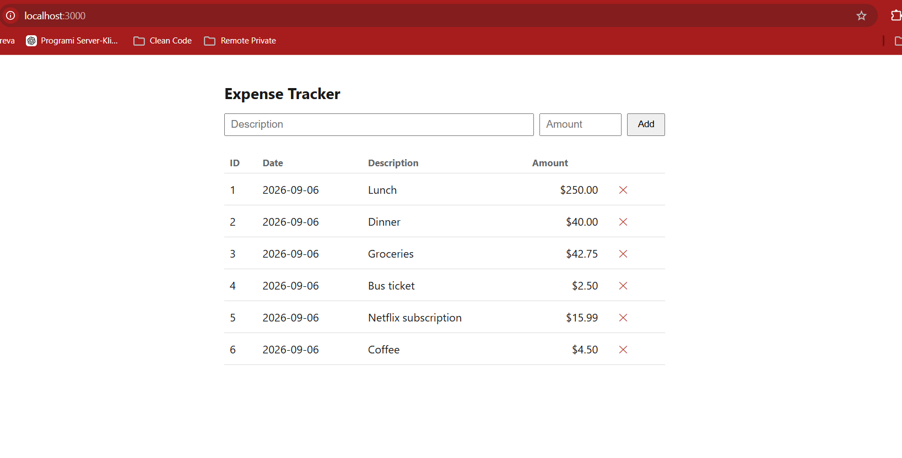

Expense Tracker CLI

The Problem
A personal project built to track day-to-day expenses without pulling in a database or a heavyweight app, and to use the project as a deliberate exercise in explicit error handling: instead of the usual throw/catch approach, every operation in the codebase says exactly whether it succeeded or failed, and why, so a failure can never pass through silently.
My Role
Sole developer, owning the project end-to-end, from the core data model through both the CLI and the web interface built on top of it.
Technical Decisions
Result<T, E> instead of exceptions
The whole codebase is built around a generic
Result<T, E> type (src/types.ts)
instead of throwing exceptions, every operation (storage read/write,
add, delete) returns { ok: true, value } or
{ ok: false, error }, forcing callers to explicitly
handle failure. Storage errors are also typed as discriminated
unions (read_failed, parse_failed,
write_failed, etc.), so the compiler catches an
unhandled failure case instead of it surfacing as a runtime crash.
One core, two interfaces
The same logic is exposed two ways rather than being duplicated:
a CLI (src/index.ts) for add,
list, and delete commands run directly
from the terminal, and an Express web server
(src/server.ts) that exposes the identical operations
as a REST API (GET/POST /api/expenses,
DELETE /api/expenses/:id) while serving a static
frontend. Keeping one shared core meant the business logic only
had to be correct in one place.
Flat-file JSON storage
Expenses are stored as plain JSON in data/expenses.json
(id, description, amount, date) instead of a database. For a
single-user, local tool this removed an entire layer of setup and
dependencies without giving up the type-safety goals of the
project, since reads and writes still go through the same
Result-returning storage functions.
Project Information
- Category: CLI + Web Tool (TypeScript, Node.js)
- Type: Personal project
- Role: Solo developer
- Timeline: 2026